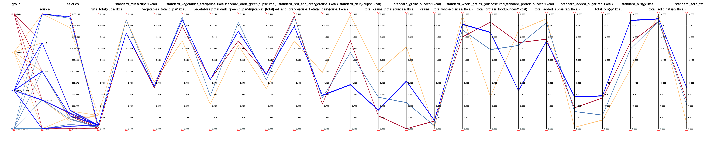

Food Intake BY Groups
Present food intake by different groups of people from different sources
Actual food from different sources for different groups 2007-2010
This image is about the food intake by different groups of people, like children, adults, lower incomes, higher incomes,
from different sources, such as “at home”, “fast food”, “restaurant”,
“school”, “other”. The counting is based on the average daily food amount for one person from 2007-2010. Besides,
it also shows us a recommendation for food intake, by counting the expected food unit per 1000 calories total intake.
We can see that , "Fast food” and “Restaurants” contain more solid fats than homemade food and “other” places. “School” for children seems far away from recommended.
Individual usually eats more meat in a “restaurant” than other sources.
“Other” provides most added sugars.
Besides, from group’s perspective, for example, children and lower incomes should eat less added sugar.
A parallel chart of food intake by different groups of people
The biggest advantage of this kind of chart is that, it could show details and differences in a more proper and accurate way. For instance, from the charts above, we have no idea about how much amount of protein or whole grains should people of one group eat more or cut down to meet standard. Now it is easy with this parallel graph. First you need to identify the group color, dark red for adults,
yellow for children, blue for higher incomes, and light blue for lower incomes.
We can easily find that, children and lower incomes are with positive slope, while adults and higher incomes are with
negative slope, that means the former two need to eat more protein and the latter two need to eat less protein.
Besides, higher incomes tends to be closer to recommended food amount compared to
groups of lower incomes, because the corresponding lines from actual to recommended for higher incomes are usually with
lower slopes than those for lower incomes.
Generally, there is many lines from actual
to recommended with positive slopes, which means people should eat more, such as fruits, vegetables, grains, etc.
